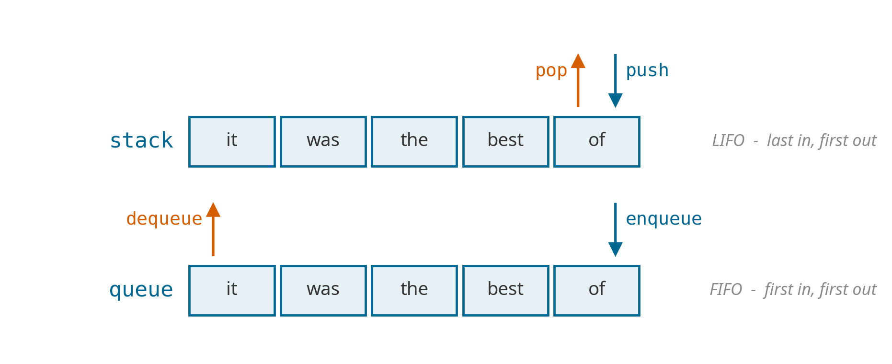
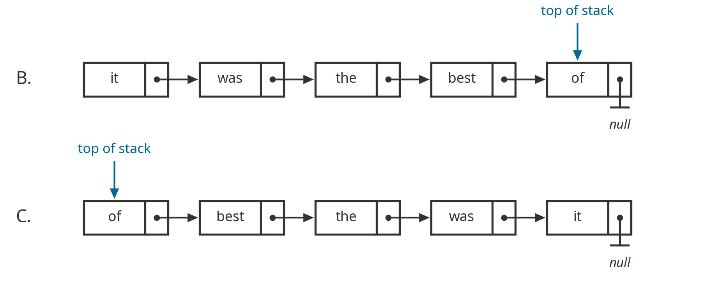
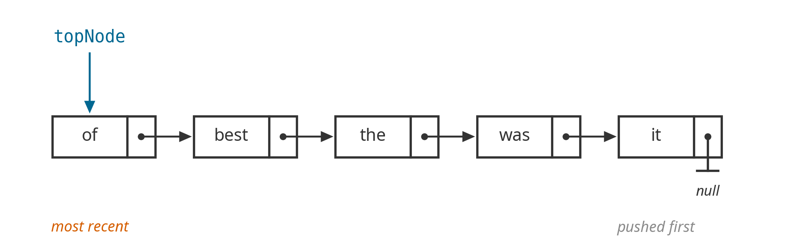
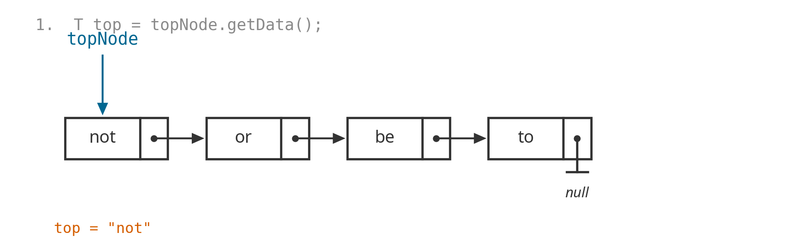
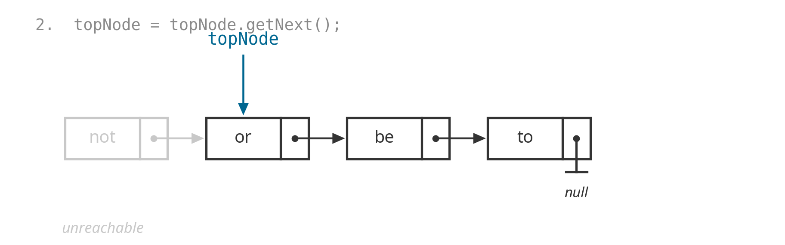
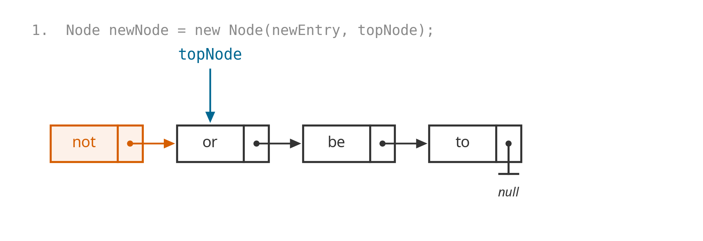
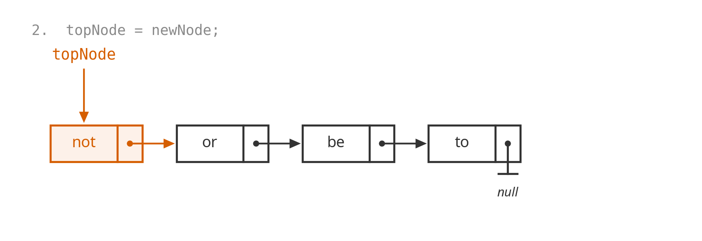
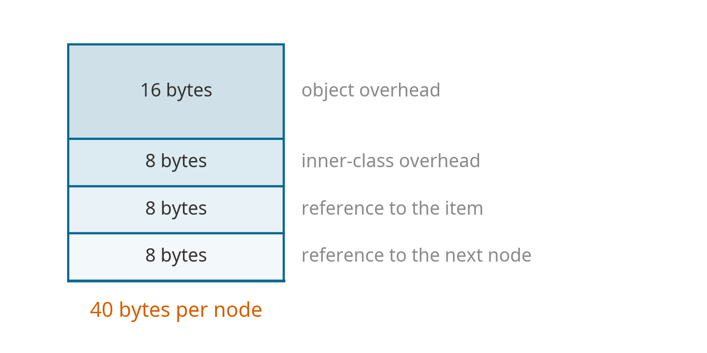

Chapter 2
Stacks and Implementations
Adapted from R. Sedgewick and K. Wayne, Algorithms, 4th edition.
Control-Z
I open an editor and type five words, one at a time:
\[\texttt{it} \;\to\; \texttt{was} \;\to\; \texttt{the} \;\to\; \texttt{best} \;\to\; \texttt{of}\]
Then I press Ctrl-Z twice.
What is on the screen? Say it out loud before I click.
Control-Z
it was the best
The editor threw away of, then best — the two most recent words, newest first. It did not touch it.
Nobody had to tell it which word to remove. The rule was fixed before I typed anything: undo the most recent thing.
The Same Machine
- Back in a browser returns to the page you were on most recently.
- A crashed program prints the method that failed, then its caller, then its caller.
- A compiler matching
}against{reaches for the most recent unmatched{.
One rule, four features. Today we build the thing that enforces it.
Two Collections, One Question
Both hold objects, and both insert at the same end.

Which item do we remove? That one decision names the data structure.
Two Collections, One Question
Stack. Examine the item added most recently. LIFO — last in, first out.
Queue. Examine the item added least recently. FIFO — first in, first out.
This chapter is the stack: the API, two ways to build it, and the programs that would be painful to write without one.
Chapter 3 is the queue.
Today
| Part | Question it answers |
|---|---|
| 1 | What does a stack promise its client? |
| 2 | How do you build one out of linked nodes? |
| 3 | How do you build one out of an array? |
| 4 | How does one class hold any type of item? |
| 5 | What is it good for? |
Parts 2 and 3 build the same API twice. Watch what the client can and cannot tell apart.
Part 1
Agree on the API
Client, Implementation, Interface
Interface. A description of the data type and its operations. No code that does anything.
Implementation. The actual code that carries the operations out.
Client. A program that uses the operations, and only the operations.
The whole chapter is the discipline of keeping these three apart.
Why Bother Separating Them
- The client cannot see inside the implementation. So it can choose among many implementations, and swap one for another without changing a line.
- The implementation cannot see the client’s needs. So many clients can reuse the same code.
Design. Modular, reusable libraries.
Performance. Drop in the optimized implementation exactly where it matters, and nowhere else.
The Stack API exam
| Operation | Task |
|---|---|
push(newEntry) |
Add a new entry to the top of the stack. |
pop() |
Remove and return the top entry. |
peek() |
Return the top entry, leaving the stack unchanged. |
isEmpty() |
Is the stack empty? |
clear() |
Remove every entry. |
Data. A collection of objects of the same type, in reverse chronological order.
Five operations. Nothing here says how any of it is stored.
A Warmup Client
Read words from standard input and print them back in reverse order.
Reversal is what a stack is. You will not find a loop that reverses anything — the order fell out of the removal rule.
Reading a Stack
Bottom to top, what is left?
| after | stack (bottom → top) | |
|---|---|---|
| push Jim | Jim | |
| push Jess | Jim Jess | |
| push Jill | Jim Jess Jill | |
| push Jane | Jim Jess Jill Jane | |
| push Joe | Jim Jess Jill Jane Joe | |
| pop | Jim Jess Jill Jane | returned Joe |
| pop | Jim Jess Jill | returned Jane |
Question
Bottom to top, what is in the stack?
- A 12 4
- B 12 4 6
- C 12 4 4
- D 12 6 6
Question
| statement | stack (bottom → top) | |
|---|---|---|
| push 12 | 12 | |
| push 4 | 12 4 | |
| push s.peek()+2 | 12 4 6 | peek returned 4 |
| pop | 12 4 | threw the 6 away |
| push s.peek() | 12 4 4 | peek returned 4 again |
The trap. peek() looks and pop() removes. Read the third line as “push two more than the top” and you land on B.
Question
What does it print?
- A 0 1 2 3 4
- B 4 3 2 1 0
- C 4 3 2
- D nothing — it throws an exception
Question
i counts up while s.size() counts down. They meet in the middle.
| i | s.size() | i < size? | printed |
|---|---|---|---|
| 0 | 5 | yes | 4 |
| 1 | 4 | yes | 3 |
| 2 | 3 | yes | 2 |
| 3 | 2 | no | — loop ends |
Half the stack is still there, and nothing warned you. A loop condition that the loop body changes is a bug waiting to happen.
Two Ways to Fix It
Read the size once, before the loop touches anything.
The second needs no counter at all. Prefer it.
A Decision the API Has to Make
Q. A client calls pop() on an empty stack. What should happen?
- A Assume it never happens — document it and move on.
- B Return
null. - C Throw an exception.
A is a crash at some unrelated line, later. B is worse: null is a legal item, so the client cannot tell “empty” from “the top was null.”
A Decision the API Has to Make
C fails at the line that made the mistake, with a name that says what went wrong: EmptyStackException.
That decision is part of the interface, not the implementation. Every implementation we write has to honor it, and the client can rely on it without knowing which one it got.
Guiding principle. Fail where the bug is, not where the damage shows up.
The Interface, in Java
/** An interface for the ADT stack. */
public interface StackInterface<T>
{
/** Adds a new entry to the top of this stack. */
public void push(T newEntry);
/** Removes and returns this stack's top entry.
@throws EmptyStackException if the stack is empty. */
public T pop();
/** Retrieves this stack's top entry, leaving the stack unchanged.
@throws EmptyStackException if the stack is empty. */
public T peek();
/** Detects whether this stack is empty. */
public boolean isEmpty();
/** Removes all entries from this stack. */
public void clear();
} // end StackInterfaceThe Interface, in Java
Everything a client is allowed to know is on the previous slide.
T is a type parameter — a promise that this works for strings, integers, or anything else, without a separate class for each. Part 4 earns that promise.
Now: two completely different ways to keep it.
Part 2
A Chain of Nodes
Which End Is the Top?
Push it, was, the, best, of in that order. Which representation lets both push and pop take constant time?
A. It cannot be done efficiently with a singly linked list.

Put the Top at the Front
Answer: C. A singly linked list gives immediate access to its first node.
topNoderefers to that first node.pushinserts a new node before it.popremoves it.

The Node Class
Every node holds one item and a link to the next node down the chain.
getData() reads the item; getNext() follows the chain one link further. Both Node and its fields are private — a client never sees one.
pop, in Two Moves


return top; sends the saved item back to the client. The old node is now unreachable, so Java can reclaim it.
Write pop exam
peek() is written for you. Complete the one update that leaves the stack one node shorter.
peek and pop, in Java
peek() performs the empty-stack check before topNode changes.
push, in Two Moves


No existing node moves. push creates one node and changes one reference.
Write push exam
newNode already stores the new entry and points to the old top. Complete the update that makes it the new top.
push, in Java
newNode preserves the link to the old chain before topNode changes.
Fields and Helpers
public final class LinkedStack<T> implements StackInterface<T>
{
private Node topNode; // first node in the chain
public LinkedStack() { topNode = null; }
public boolean isEmpty() { return topNode == null; }
public void clear() { topNode = null; }
private class Node
{
private T data;
private Node next;
private Node(T entry, Node nextNode) { data = entry; next = nextNode; }
private T getData() { return data; }
private Node getNext() { return next; }
} // end Node
} // end LinkedStackclear() changes one reference; the entire old chain becomes unreachable.
Question
Push it, was, the, then call this. What comes back?
- A "the" — same as the correct version
- B
EmptyStackException - C "the", and the stack loses two items
- D "was", and "the" is lost
Question
topNode = topNode.getNext(); runs first, so by the time peek() reads topNode.getData(), topNode already points at was.
the — the actual top — is now unreachable. It was never returned, and it is not on the stack. It is simply gone.
The trap. was comes back from pop() looking like the item that was removed — but it is still sitting on the stack as the new top.
The rule. topNode is the only handle onto the chain. Save what you need before you move the pointer that finds it — which is exactly why the real pop() calls peek() first.
What It Costs exam
Proposition. Every operation takes constant time in the worst case.
Not on average. Not usually. Every time.
Each operation reads or writes a fixed number of references, and that count does not depend on how many items the stack holds.
push |
pop |
peek |
isEmpty |
clear |
|
|---|---|---|---|---|---|
| worst case | \(O(1)\) | \(O(1)\) | \(O(1)\) | \(O(1)\) | \(O(1)\) |
What It Costs in Memory

Princeton’s model. A stack of \(N\) items uses about \(40N\) bytes on a 64-bit JVM with 8-byte references.
Only \(8\) of those \(40\) point at the item. The other \(32\) are the price of being a node.
This counts the stack, not the items. Those belong to the client.

CSCI 2336 Data Structures